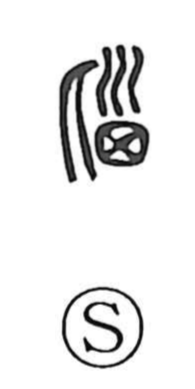

脳

Uncategorized
Kun: | On: nou
brain
Explanation
A picto-phonetic graph. The original form is 腦, whose upper element depicts the fontanel—the soft cranial suture of an infant—often shown with a little hair, the very place where the brain lies. Adding 月 (the “flesh” radical) marks it as a part of the body, yielding the sense “brain.” The phonetic element (written as 甾 here) supplies the reading nō. The Shuowen defines it as “the marrow of the head.” Ancient lore even imagined the brain as something to be drawn out: in the Zuo Commentary (Duke Xi, 28th year), the Marquis of Jin dreams of the Chu ruler sucking his brain, and prehistoric skulls found near Beijing with small holes have been interpreted as made for extracting the brain. The related character 悩/惱 speaks of being troubled.